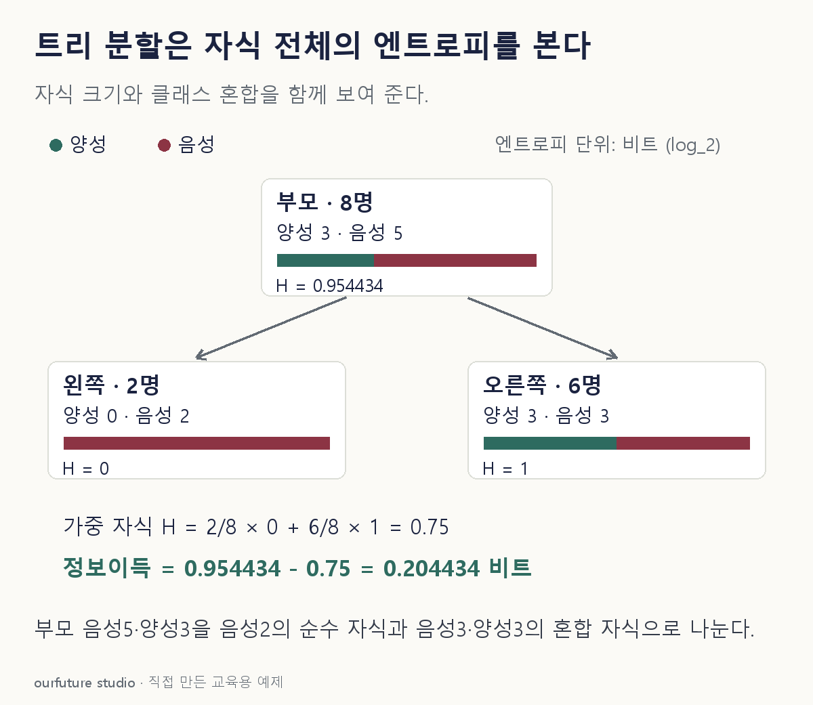

조건을 바꾸며 확인하기
로그 밑2, 비가중 도수다. 빈 자식 H의 가중 기여는 0으로 처리하며 실제 트리 분할 적합을 수행하지 않는다.
기본 예제와 비교하기
아래 그림과 표는 글의 기본 조건입니다. 입력을 바꾼 결과는 계산 칸에서 확인하세요.

같은 문제를 직접 골라 보기
앞 8명 예제와 별개인 가상 분할 평가다. 계산 편의를 위해 부모 H=1, 분할 A의 가중 자식 H=0.8, B는 0.3으로 주었다.
조건을 더 바꾸면?
왼쪽 자식은 음성 2명, 오른쪽은 음성 3명·양성 3명이다. 로그 밑 2로 가중 자식 엔트로피와 정보이득을 구하라. 부모는 음성 5명·양성 3명이다.
변형 풀이 확인
가중 자식 H=0.75, 부모 H≈0.954434, 정보이득≈0.204434.
가중 자식 H는 2/8×0+6/8×1=0.75다. 부모 H=−(5/8)log₂(5/8)−(3/8)log₂(3/8)≈0.954434에서 0.75를 뺀다. 부모의 반반 조건을 임의로 유지하지 않는다.
부모에서, 자식의 크기 가중평균을 뺀다.